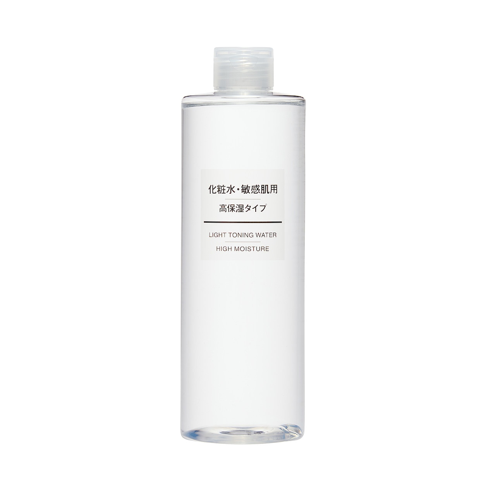

化粧水・敏感肌用
- 高保湿タイプ
- しっとりタイプ
- さっぱりタイプ

・無香料・無着色・無鉱物油・弱酸性・パラベンフリー・アルコールフリー・アレルギーテスト済み
（すべての方にアレルギーが起きないわけではありません）
◎ご使用方法：洗顔の後、適量を手やコットンにとり、顔全体になじませてください。
化粧水説明
岩手県釜石の天然水を使用したスキンケアシリーズです。乾燥が気になる敏感肌にうるおいをたっぷり与えて保護します。デリケートな肌にもやさしい低刺激性です。
大容量比較説明
大容量ですので、水浴びのように使うことができます。そして手の出しやすい価格ですのでお客様からの高評価をいただいております。